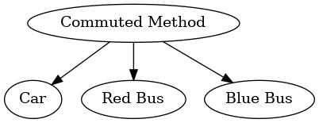
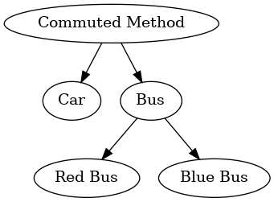

GEV
Table of Contents
(require 'org-attach-screenshot)
1 Pre-class reading: Train (2009, Ch 4.1–4.2)
1.1 Reading Quiz
- Explain why mixed logit is such a popular model, according to Train. What are its strong points vis-à-vis the IIA problem?
- What are the computational drawbacks to mixed logit?
- What are two names for a mixed logit model that has a discrete mixing distribution?
- Explain why the EM algorithm is a potentially powerful tool for estimating discrete choice models.
- How does the EM algorithm work? Why does it work?
2 Review
2.1 Red bus / blue bus choice set
- As we discussed last time, adding another bus results in odd substitution patterns
- This is because of the IIA property of multinomial logit models

2.2 Nesting the choice set
One way to get around IIA is to nest the choice set
- Nesting explicitly introduces correlation across alternatives within the same nest

2.3 Other cases where nesting is useful
Elections
- Suppose we have two candidates, A and B
- If we introduce C, whose platform resembles B, what will new vote shares be?
- (Primary elections are a kind of nesting)
Product markets
- Nesting ``branded'' and ``generic'' products (e.g. branded vs. micro-brewed beer)
- But some consumers won't purchase either type of the product
- Ignoring non-buyers, will give misleading price elasticities of demand
3 Nested Logit
Coming back to the red bus/blue bus problem, we would like some way for the errors for the red bus to be correlated with the errors for the blue bus
- The nested logit allows a nest-specific error:
where:
- \(\nu_{ik}+\lambda\epsilon_{ij}\) is distributed Type I Extreme Value
- The \(\nu\)'s and the \(\epsilon\)'s are independent
- \(\epsilon_{ij}\) is distributed Type I extreme value
- Distribution of \(\nu_k\)'s is derived in Theorem 2.1 of cardell1997
Composite error term for car is independent from either the red bus error or the blue bus error
- If we added a yellow bus, all errors in the bus nest would be independent conditional on choosing to take a bus (i.e. IIA within nest)
- But the bus nest errors are correlated from the viewpoint of the top level (i.e. before conditioning on nest choice)
- Note: adding two extreme value errors does .hi[not] give back an extreme value error
- But the difference between two T1EV errors is distributed logistic
More important than the exact error distribution is the choice probabilities:
\begin{align*} P_{iC}&=\frac{\exp(u_{iC})}{\left[\exp\left(\frac{u_{iRB}}{\lambda}\right)+\exp\left(\frac{u_{iBB}}{\lambda}\right)\right]^{\lambda}+\exp(u_{iC})}\\ P_{iRB}&=\frac{\exp\left(\frac{u_{iRB}}{\lambda}\right)\left[\exp\left(\frac{u_{iRB}}{\lambda}\right)+\exp\left(\frac{u_{iBB}}{\lambda}\right)\right]^{\lambda-1}}{\left[\exp\left(\frac{u_{iRB}}{\lambda}\right)+\exp\left(\frac{u_{iBB}}{\lambda}\right)\right]^{\lambda}+\exp(u_{iC})} \end{align*}Not particularly intuitive, but can break it down into parts \(P(B)P(RB|B)\):
\begin{align} P_{iRB}&=\left(\frac{\left[\exp\left(\frac{u_{iRB}}{\lambda}\right)+\exp\left(\frac{u_{iBB}}{\lambda}\right)\right]^{\lambda}}{\left[\exp\left(\frac{u_{iRB}}{\lambda}\right)+\exp\left(\frac{u_{iBB}}{\lambda}\right)\right]^{\lambda}+\exp(u_{iC})}\right)\times\label{eq:pbus}\\ &\phantom{\times\times}\left(\frac{\exp\left(\frac{u_{iRB}}{\lambda}\right)}{\exp\left(\frac{u_{iRB}}{\lambda}\right)+\exp\left(\frac{u_{iBB}}{\lambda}\right)}\right)\nonumber \end{align}4 Nested Logit Estimation
The log likelihood can then be written as:
\begin{align*} \ell&=\sum_{i=1}^N\sum_{j\in J}(d_{ij}=1)\ln(P_{ij})\\ &= \sum_{i=1}^N\left[(d_{iC}=1)\ln(P_{iC})+\sum_{j\in J_B}(d_{ij}=1)\ln(P_{iB}P_{ij|B})\right]\\ &=\sum_{i=1}^N\left[(d_{iC}=1)\ln(P_{iC})+\sum_{j\in J_B}(d_{ij}=1)(\ln(P_{iB})+\ln(P_{ij|B}))\right]\\ &=\sum_{i=1}^N\Bigg[(d_{iC}=1)\ln(P_{iC})+(d_{iBB}=1+d_{iRB}=1)\ln(P_{iB})\\ &\qquad+\left.\sum_{j\in J_B}(d_{ij}=1)\ln(P_{ij|B})\right] \end{align*}Could estimate a nested logit by straight maximum likelihood. An alternative follows from decomposing the nests into the product of two probabilities: \(P(RB|B)P(B)\)
- In order to do this, however, first decompose \(u_{RB}\) into two parts:
- We also need to choose normalizations:
- \(u_{iC} = 0\)
- \(u_{iBB|B} = 0\)
- So we will estimate \((\beta_{B},\beta_{RB}, \gamma,\lambda)\) where \(\gamma\) corresponds to the \(Z\)'s (alt-specific)
Note that our normalizations imply the following observable components of utility
\begin{align*} u_{iC}&=0\\ u_{iBB}&=\beta_{B}X_{i}+\gamma (Z_{BB}-Z_{C})\\ u_{iRB}&=(\beta_{B}+\beta_{RB})X_{i}+\gamma (Z_{RB}-Z_{C}) \end{align*}- Now estimate \(\beta_{RB}\) and \(\gamma\) in a 1st stage using only observations that chose bus, \(N_B\):
- The \(1\) in the \(\ln()\) operator corresponds to \(\exp(u_{iBB|B}/\lambda)\) since \(u_{iBB|B} = 0\)
Now consider the term in the numerator of \(P(B)\) in \eqref{eq:pbus}. We can rewrite this as:
\begin{align*} \left[\exp\left(\frac{u_{iRB}}{\lambda}\right)+\exp\left(\frac{u_{iBB}}{\lambda}\right)\right]^{\lambda}&= \exp(u_{iBB})\left[\exp\left(\frac{u_{iRB|B}}{\lambda}\right)+1\right]^{\lambda}\\ &=\exp(u_{iBB}+\lambda I_{iB}) \end{align*}where \(I_{iB}\) is called the .hi[inclusive value] and is given by:
\begin{align*} I_{iB}&=\ln\left(\exp\left(\frac{u_{iRB|B}}{\lambda}\right)+1\right) \end{align*}Note: looks like \(E\left(\text{utility}\right)\) associated with a particular nest (minus Euler's constant)
Taking the estimates of \(u_{iRB|B}\) as given and calculating the inclusive value, we now estimate a second logit to get \(\beta_B\):
\begin{align*} \ell_2&=\sum_i(d_{iB}=1)(u_{iBB}+\lambda I_{iB}-u_{iC})+\ln(1+\exp(u_{iBB}+\lambda I_{iB}-u_{iC})) \end{align*}- Could do all this because log of the probabilities was additively separable. Consider the log likelihood
contribution of someone who chose red bus:
\begin{align*} \ln(P_{iB}(\beta_{B},\beta_{RB},\gamma,\lambda))&+\ln(P_{iRB|B}(\beta_{RB},\gamma)) \end{align*}- We get estimates of \(\beta_{RB}\) and \(\gamma\) only from the second part of log likelihood
- Then we take these as given when estimating \(\beta_{B}\) and \(\lambda\)
5 The Nested Logit as a Dynamic Discrete Choice Model
Instead of having individuals know their full error, consider the case where the error is revealed in stages
- First individuals choose whether or not to ride the bus and there is an extreme value error associated with both the bus and the car option
- Individuals take into account that if they choose the bus option they will get to make a choice about which bus in the next period (option value)
- With the errors in the second choice also distributed Type I extreme value, independent from each other, and independent from the errors in the first period, the expectation on the value of the second period decision is \(\lambda I_{iB}\) plus Euler's constant.
5.1 Proposition 1 mcfadden1978
Let \(Y_{j}=e^{u_{j}}\). Suppose we have a function \(G(Y_{1},...,Y_{{J}})\) that maps from \(R^{{J}}\) into \(R^1\)
If \(G\) satisfies:
- \(G\geq 0\)
- \(G\) is homogeneous of some degree \(k\)
- \(G\rightarrow \infty\) as \(Y_{j}\rightarrow \infty\) for any \(j\)
- Cross partial derivatives weakly alternate in sign, beginning with \(G_{i}\geq 0\)
then:
\begin{align*} F(u_1,...,u_\mathcal{J})&=\exp\left[-G(Y_1,....,Y_{J})\right] \end{align*}is the cumulative distribution of a multivariate extreme value function and:
\begin{align*} P_{i}&=\frac{Y_{i}G_{i}}{G} \end{align*}where \(G_i\) denotes the derivative of \(G\) with respect to \(Y_i\)
6 Logit from GEV
Another way of thinking about the last statement is that:
\begin{align*} P_i&=\frac{\partial \ln(G)}{\partial u_i} \end{align*}- For the multinomial logit case, the \(G\) function is:
with the derivative of the log of this giving multinomial logit probabilities
- But \(\ln(G)\) (plus Euler's constant) is .hi[also] expected utility
- In fact, for all GEV models \(\ln(G)\) is expected utility!
Suppose a nested logit model with two nests \((F,NF)\) and a no-purchase option \(N\)
- The \(G\) function is then:
- Differentiating \(\ln(G)\) (the expected utility function) with respect to \(u_j\) where \(k\in F\) yields the probability \(k\) is chosen:
6.1 Overlapping nests (Bresnahan et al., 1997)
We can also come up with more general nesting structures
- bst1997 model 4 overlapping nests for computers:
- Branded but not Frontier \(\{B,NF\}\)
- Generic but Frontier \(\{NB,F\}\)
- Branded and Frontier \(\{B,F\}\)
- Generic but not Frontier \(\{NB,NF\}\)
- Use the model to understand market power in PC sector in late 1980s
- Overlapping nests explain coexistence of imitative entry and innovative investment